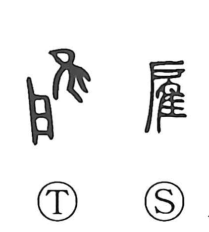

雇

Kun: yatou | On: ko
to hire ・ to employ
Explanation
雇 combines 戸, the single-leaf door of a shrine, with 隹, a short-tailed bird. In ancient rite, a bird was set before the opened deity door and its behavior was read to inquire into the gods’ will—borrowing the bird’s power for divination. From this notion of borrowing and using another’s power arose the meaning “to hire, to engage,” later applied to employing people or hiring vehicles for pay. The related character 顧 conveys reverently looking back at the outcome of such consultation.